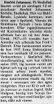
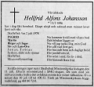

Henfrid Alfonso Johansson
Montör i Sunnanå, Skellefteå sn 1950; Elfirman Elektrotjänst. Blev 82 år.
| Född: | 1896-03-13 Betsele 1, Lycksele fs, Lycksele sn. [1] |
|---|
| Död: | 1978-07-02 Björkg 8, Skellefteå, Skellefteå lfs, Skellefteå kn. [2] |
|---|
| Vigsel: | 1937-04-29 Sörböle, Skellefteå lfs, Skellefteå sn. [3] | Borgerlig vigsel.
Henfrid Alfonso Johansson, Montör, Nygatan 67, Skellefteå stad och Ingrid Maria Hällgren, Hem.äg.dotter i Sörböle.
Vigselförrättare: Landsfiskal T. Renman, Skellefteå.
|
|---|
| Levde: | 1946 Böle 4:59, Sörböle, Sunnanå mcp, Skellefteå lfs, skellefteå sn. [4] | |
|---|
| Barn: |
|---|
| Siv Inger Maria Johansson (1946 - ) |
Personhistoria
| Årtal | Ålder | Händelse |
|---|
| 1896 |
|
Födelse 1896-03-13 Betsele 1, Lycksele fs, Lycksele sn [1] |
| 1913 |
17 år |
Makan Ingrid Maria Hällgren föds 1913-11-26 Stenbrånet 1, Bastuträsk kbfd, Norsjö sn [5] |
| 1937 |
41 år |
Vigsel Ingrid Maria Hällgren 1937-04-29 Sörböle, Skellefteå lfs, Skellefteå sn [3] |
| 1946 |
|
Levde Ingrid Maria Hällgren 1946 Böle 4:59, Sörböle, Sunnanå mcp, Skellefteå lfs, skellefteå sn [4] |
| 1946 |
50 år |
Dottern Siv Inger Maria Johansson föds 1946-04-04 Böle 4:59, Sunnanå, Skellefteå lfs, Skellefteå sn [4] |
| 1978 |
82 år |
Död 1978-07-02 Björkg 8, Skellefteå, Skellefteå lfs, Skellefteå kn [2] |
Källor
| [1] | Lycksele (AC) C:7 (1895-1905) 40/1896 Bild 410 / sid 37, AI:14b (1890-1899) Bild 65 / sid 50 |
| |
| | |
| [2] | RTB 78 / SPAR 80 |
| |
| | |
| [3] | SCB Vigda AC Skellefteå lfs 47/1937, Skellefteå landsförsamling (AC) AIIa:22 (1912-1926) Bild 1490 / sid 143 |
| |
| | |
| [4] | Mtl Sveriges befolkning 1950 |
| |
| | |
| [5] | Bastuträsks kbfd (AC) AIIa:1 (1912-1928) Bild 2830 / sid 975 |
| |
|
|  |
| 1978-07-04. Norra Västerbottten |
| |
|  |
| 1978-07-06. Norra Västerbotten |
|
{kind=link}
{kind=link}